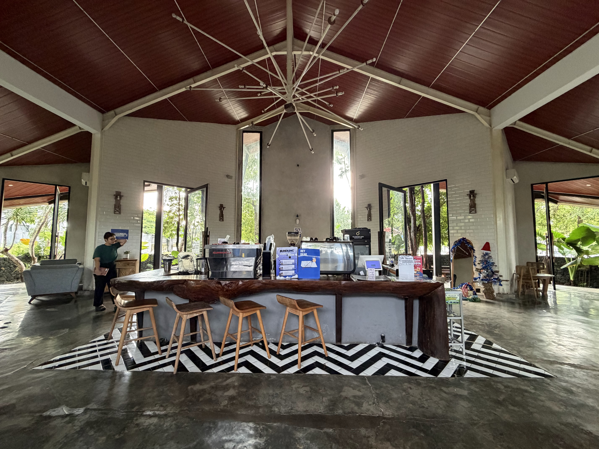

MEMBACA KONTEKS
Setiap persiapan dimulai dari ruangnya.
Interior kafe menunjukkan lingkungan tempat photobooth akan menjadi bagian dari aktivitas pengunjung. Sebelum memikirkan perangkat atau hasil akhir, penting untuk melihat kondisi lokasi secara utuh: bagaimana ruang digunakan, apa yang ada di sekitarnya, dan bagaimana sebuah layanan baru akan hadir tanpa terasa terpisah dari suasana tempat.
Dalam peran koordinasi dan pengawasan, pemahaman konteks membantu percakapan dengan pihak terkait menjadi lebih konkret. Keputusan dapat dibicarakan dengan merujuk pada kondisi yang benar-benar ada di lapangan.